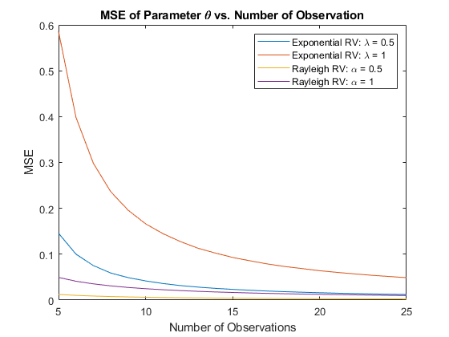
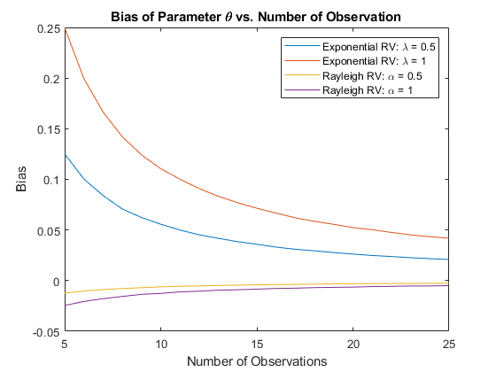
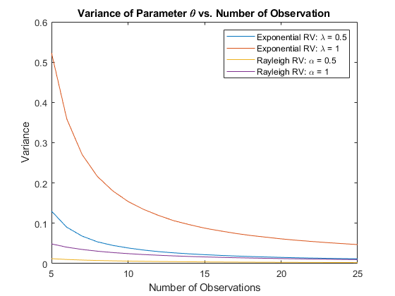

Contents
clc; clear; close all;
Part 1
N = 1e6;
N_obs = 20;
obs = 5:25;
lambda = [.5 1];
alpha = [.5 1];
lambdaEst = @(x, n) n ./ sum(x, 2);
alphaEst = @(x) sqrt(.5 * mean(x.^2, 2));
mseExp1 = zeros(size(obs));
mseExp2 = zeros(size(obs));
mseRay1 = zeros(size(obs));
mseRay2 = zeros(size(obs));
biasExp1 = zeros(size(obs));
biasExp2 = zeros(size(obs));
biasRay1 = zeros(size(obs));
biasRay2 = zeros(size(obs));
varExp1 = zeros(size(obs));
varExp2 = zeros(size(obs));
varRay1 = zeros(size(obs));
varRay2 = zeros(size(obs));
for i = obs
exp1 = exprnd(1/lambda(1), [N i]);
exp2 = exprnd(1/lambda(2), [N i]);
ray1 = raylrnd(alpha(1), [N i]);
ray2 = raylrnd(alpha(2), [N i]);
lambdaHat1 = lambdaEst(exp1, i);
lambdaHat2 = lambdaEst(exp2, i);
alphaHat1 = alphaEst(ray1);
alphaHat2 = alphaEst(ray2);
mseExp1(i - obs(1) + 1) = mean((lambda(1) - lambdaHat1).^2);
mseExp2(i - obs(1) + 1) = mean((lambda(2) - lambdaHat2).^2);
mseRay1(i - obs(1) + 1) = mean((alpha(1) - alphaHat1).^2);
mseRay2(i - obs(1) + 1) = mean((alpha(2) - alphaHat2).^2);
biasExp1(i - obs(1) + 1) = mean(lambdaHat1) - lambda(1);
biasExp2(i - obs(1) + 1) = mean(lambdaHat2) - lambda(2);
biasRay1(i - obs(1) + 1) = mean(alphaHat1) - alpha(1);
biasRay2(i - obs(1) + 1) = mean(alphaHat2) - alpha(2);
varExp1(i - obs(1) + 1) = var(lambdaHat1);
varExp2(i - obs(1) + 1) = var(lambdaHat2);
varRay1(i - obs(1) + 1) = var(alphaHat1);
varRay2(i - obs(1) + 1) = var(alphaHat2);
end
figure;
plot(obs, mseExp1, obs, mseExp2, obs, mseRay1, obs, mseRay2);
title("MSE of Parameter \theta vs. Number of Observation");
xlabel("Number of Observations");
ylabel("MSE");
legend("Exponential RV: \lambda = " + lambda(1), ...
"Exponential RV: \lambda = " + lambda(2), ...
"Rayleigh RV: \alpha = " + alpha(1), ...
"Rayleigh RV: \alpha = " + alpha(2));
figure;
plot(obs, biasExp1, obs, biasExp2, obs, biasRay1, obs, biasRay2);
title("Bias of Parameter \theta vs. Number of Observation");
xlabel("Number of Observations");
ylabel("Bias");
legend("Exponential RV: \lambda = " + lambda(1), ...
"Exponential RV: \lambda = " + lambda(2), ...
"Rayleigh RV: \alpha = " + alpha(1), ...
"Rayleigh RV: \alpha = " + alpha(2));
figure;
plot(obs, varExp1, obs, varExp2, obs, varRay1, obs, varRay2);
title("Variance of Parameter \theta vs. Number of Observation");
xlabel("Number of Observations");
ylabel("Variance");
legend("Exponential RV: \lambda = " + lambda(1), ...
"Exponential RV: \lambda = " + lambda(2), ...
"Rayleigh RV: \alpha = " + alpha(1), ...
"Rayleigh RV: \alpha = " + alpha(2));
  
Part 2
load data.mat;
[~, size] = size(data);
paramExp = lambdaEst(data, size);
paramRay = alphaEst(data);
dataVar = var(data);
disp("Variance of the Data: " + dataVar);
paramExpVar = 1 / paramExp^2;
disp("Variance of Exponential RV given parameter: " + paramExpVar);
paramRayVar = (4 - pi)/2 * paramRay^2;
disp("Variance of Rayleigh RV given parameter: " + paramRayVar);
if (paramExpVar - dataVar) > (paramRayVar - dataVar)
disp("Data was drawn from Rayleigh Distribution");
else
disp("Data was drawn from Exponential Distribution");
end
Variance of the Data: 0.004195
Variance of Exponential RV given parameter: 0.016458
Variance of Rayleigh RV given parameter: 0.0044313
Data was drawn from Rayleigh Distribution